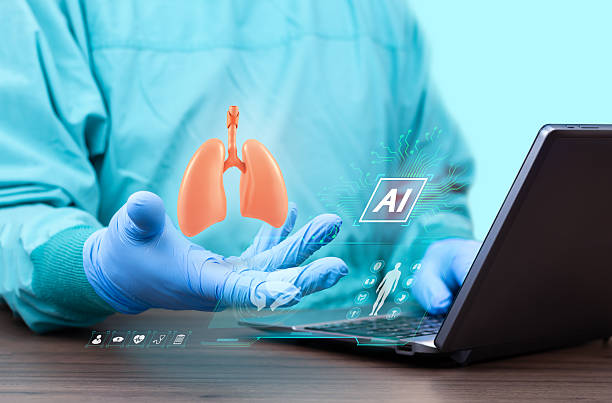

⭐ PROYECTO ESTRELLA

Sistema End-to-End para Detección de Enfermedades Pulmonares mediante Deep Learning
Diseño y entrenamiento de redes neuronales profundas avanzadas para la clasificación automática de patologías pulmonares (Asma, EPOC, Neumonía) mediante el procesamiento y modelado de señales bioacústicas.
- Extracción y optimización de características acústicas mediante coeficientes MFCC.
- Modelado predictivo utilizando arquitecturas híbridas avanzadas: CNN, BiLSTM, CNN-LSTM y BiLSTM.
- Optimización de hiperparámetros alcanzando más del 80% de exactitud diagnóstica.
Python
PySpark
TensorFlow
Keras
Librosa
Airflow
FastAPI
Docker
Render
Git
GitHub

Bioacústica: Clasificación de Cantos de Anfibios con Deep Learning
Procesamiento de audios bioacústicos. Implementación de modelos DNN, CNN y LSTM para clasificar cantos del anuro Boana riojana, logrando 97% de exactitud en la predicción.
Python
TensorFlow
Keras
Git
GitHub
Ver Proyecto

Procesamiento Digital de Imágenes y Computer Vision
Procesamiento de imágenes con técnicas de visión por computadora: cromáticas, operaciones aritméticas de píxeles, convoluciones, morfología y segmentación para algoritmos de clasificación.
Python
OpenCV
Git
GitHub
Ver Proyecto